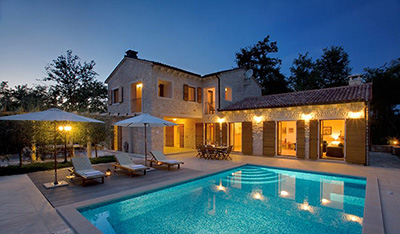
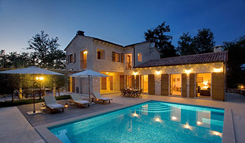

24. - 28. of April 2019.
Karigador, Istria, Croatia
nikolina@banistra.hr
packages vary, read the info
 



Join us this spring for a 5 day retreat in the village Karigador, in the north of the beautiful Istria,
Croatia. We will be staying in two luxury 5* villas located within the enchanting
setting of oak forests, vineyards, fields and olive groves, on a walking distance from the beach.
As spring is approaching its peak, we are invited to come out of our homes, to breath in the
fresh air, feel the sun on our skin. Just like nature, our fires are being rekindled.
Nika will lead you in finding a commitment which would make you feel empowered instead of
bound, a routine which would inspire and energize you, a path that can lead to creating ever-flowing
passion .
Tap into your core, connect to your wishes, set new intentions. Through a spontaneous, invigorating
and fun yoga practice we will dive into out creative sides. We will also find moments to get together
in daily activities such as movement meditation, spontaneous dance sessions, pranayama, yoga self-
massage, silent walks or yoga nidra.
Surrounded by the purest of what nature has to offer, there will be plenty time for creative writing,
spending time alone in - or outdoors, near the swimming pool, on the beach, in the beautiful garden
or amongst olive trees. To our disposal there are also 2 sauna rooms. Suzana Jankovic will visit us
and offer magical Thai Yoga massage or abdominal massage treatments.
Allow yourself to question the effects of your routine on your life, joy and productiveness. Let go of
what doesn’t serve you at the moment and adapt ways to finding what does .
Together we are creating quality time for ourselves to find new strength by setting clear goals.
• BASIC •
accomodation (4 nights, 5 days) in a luxury villa
2 classes per day (yoga, meditation)
breakfast, lunch and dinner
600,00 euro per person
• EXTRAS 1 •
basic package +
transfer from and to the airport
1 Thai or abdominal massage
truffle degustation
2 excursions
750,00 euro per person
• EXTRAS 2 •
all from Basic & Extras 1 package +
cooking workshop
natural soap workshop
olives and wine degustation
904,00 euro per person
Nika started ‘moving’ at a very young age. Climbing and hanging on trees, occasionally falling from
them. Learning by experience and through physical actions created a solid foundation for her. Her
growing up has been, and still is, a series of magnificent trial and error.
Basketball, running, gymnastics, volleyball, swimming, cliff diving, you name it. She always found
movement exciting, thrilling, exhilarating. She was, and still is, always on the move.
Finding Yoga naturally balanced her. The calmness of the practice made her open up to the space where
her mind learns to be quiet and still. The space where she found the joy and purpose of breathing.
After her 200h YTT under the guidance of Leah Kline at De Nieuwe Yogaschool in Amsterdam, Nika
continued her studies of Vinyasa Flow and Prana Flow Yoga with Shiva Rea, Daphne Koken, Simon Olivier-Borg,
Simon Park and Rob Hess. In her teaching, she focuses specifically on developing strength
and flexibility, enhanced mobility being the final result. Furthermore, by focusing on conscious breathing
and learning the mehanics of the body, her aim is to build fine structures between the subtle and the
physical.
We will be staying in two luxury homes categorized with 5 stars - Villas Nina and Anna - located within the enchanting
setting of oak forests, vineyards, fields and olive groves. The villas are located on a large property at walking
distance from the sea. They are built in the authentic Istrian style, distinguished by native stone and wood.
Although traditional in style, they have all the necessary infrastructure that meets the needs of modern living.
• Max. participants: 14 (based on sharing spacious room, double or single beds)
• Rooms are shared, with 2 persons per room.
DAY 1
• 12:00-17:00 Arrival, settling in
• 17:00 – 17:30 Afternoon smoothie
• 17:30 – 18:30 gentle Yoga practice and meditation
• 19:00 – 20:00 Dinner
DAY 2
• 07:00 – 07:45 Morning juice
• 08:00 – 09:30 Yoga practice
• 10:00-11:00 Breakfast
• 11:00– 13:00 Free time
• 13:00 – 14:00 Lunch
• 14:30- 17:00 Silent Walk and meditation
• 18:00 – 19:00 Dinner
DAY 3
• 07:00 – 07:45 Morning juice
• 08:00 – 09:30 Movement meditation
• 10:00 – 11:00 – Breakfast
• 11:00 – 13:00 – Free time
• 13:00 – 14:00 Lunch
• 14:00 – 15:00 – Silent walk
• 15:00 – 16:30 – Yoga practice
• 16:30 – 18:00 – Free time
• 18:00 – 19:30 – Dinner
• 20:00 – 20:30 – Evening meditation
DAY 4
• 07:00 – 07:45 Morning juice
• 08:00 – 10:00 – Yoga practice
• 10:00 – 11:00 – Breakfast
• 12:00 – 14:00 – Cycling tour Istria
• 14:30 – 15:30 – Lunch
• 15:30 – 17:00 – Free time
• 17:00 – 18:00 – Gentle Lunar practice
• 18:00 – 19:30 – Dinner
DAY 5
• 07:00 – 08:00 Morning juice
• 08:00 – 10:00 – Movement meditation and Yoga practice
• 10:00 – 11:00 – Breakfast
• 12:00 Departure
If you need more information or need help regarding flights and transfers, send us a message. We'll be glad to help!